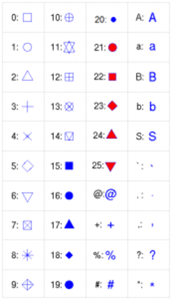
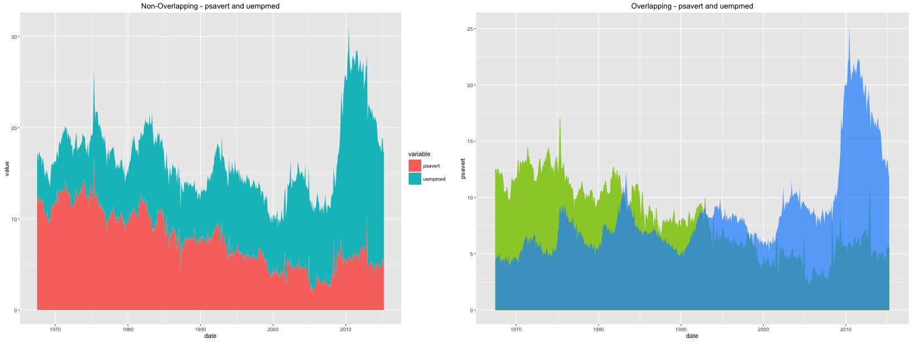
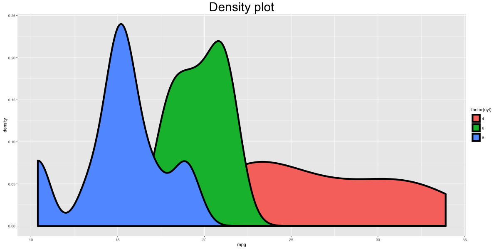
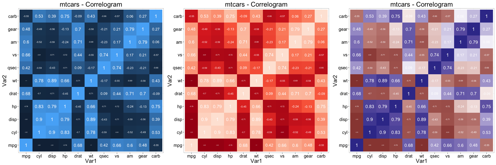

Not finding what you were looking for? Let me know!
gg <- ggplot(df, aes(x=xcol, y=ycol)) df must be a dataframe that contains all information to make the ggplot. Plot will show up only after adding the geom layers.
library(ggplot2)
gg <- ggplot(diamonds, aes(x=carat, y=price))
gg + geom_point()
gg + geom_point(size=1, shape=1, color="steelblue", stroke=2) # 'stroke' controls the thickness of point boundary
Make the aesthetics vary based on a variable in df.
gg + geom_point(aes(size=carat, shape=cut, color=color, stroke=carat)) # carat, cut and color are variables in `diamonds` 
gg1 <- gg + geom_point(aes(color=color))
gg2 <- gg1 + labs(title="Diamonds", x="Carat", y="Price") # ggtitle("title") also changes the title.
print(gg2)
gg2 + theme(text=element_text(color="blue")) # all text turns blue.
plot.title: Controls plot title. axis.title.x: Controls X axis title axis.title.y: Controls Y axis title axis.text.x: Controls X axis text axis.text.y: Controls y axis text
gg3 <- gg2 + theme(plot.title=element_text(size=25), axis.title.x=element_text(size=20), axis.title.y=element_text(size=20), axis.text.x=element_text(size=15), axis.text.y=element_text(size=15))
print(gg3)
gg3 + labs(title="Plot Title\nSecond Line of Plot Title") + theme(plot.title=element_text(face="bold", color="steelblue", lineheight=1.2))
gg3 + scale_colour_manual(name='Legend', values=c('D'='grey', 'E'='red', 'F'='blue', 'G'='yellow', 'H'='black', 'I'='green', 'J'='firebrick'))
Method 1: Zoom in
gg3 + coord_cartesian(xlim=c(0,3), ylim=c(0, 5000)) + geom_smooth() # zoom in
Method 2: Deletes the points outside limits
gg3 + xlim(c(0,3)) + ylim(c(0, 5000)) + geom_smooth() # deletes the points
#> Warning messages:
#> 1: Removed 14714 rows containing non-finite values (stat_smooth).
#> 2: Removed 14714 rows containing missing values (geom_point). Method 3: Deletes the points outside limits
gg3 + scale_x_continuous(limits=c(0,3)) + scale_y_continuous(limits=c(0, 5000)) + geom_smooth() # deletes the points outside limits
#> Warning message:
#> Removed 14714 rows containing missing values (geom_point). 
Notice the change in smoothing line because of deleted points. This could sometimes be misleading in your analysis.
gg3 + scale_x_continuous(labels=c("zero", "one", "two", "three", "four", "five")) + scale_y_continuous(breaks=seq(0, 20000, 4000)) # if Y is continuous, if X is a factorUse scale_x_discrete instead, if X variable is a factor.

gg3 + theme(axis.text.x=element_text(angle=45), axis.text.y=element_text(angle=45))
gg3 + coord_flip() # flips X and Y axis.
gg3 + theme(panel.background = element_rect(fill = 'springgreen'),
panel.grid.major = element_line(colour = "firebrick", size=3),
panel.grid.minor = element_line(colour = "blue", size=1))
gg3 + theme(plot.background=element_rect(fill="yellowgreen"), plot.margin = unit(c(2, 4, 1, 3), "cm")) # top, right, bottom, left
The whole list of colors are displayed at your R console in the color() function. Here are few of my suggestions for nice looking colors and backgrounds:
If you are looking for consistent colors, the RColorBrewer package has predefined color palettes

gg3 + theme(legend.position="none") # hides the legendgg3 + scale_color_discrete(name="") # Remove legend title (method1)
p1 <- gg3 + theme(legend.title=element_blank()) # Remove legend title (method)
p2 <- gg3 + scale_color_discrete(name="Diamonds") # Change legend title
library(gridExtra)
grid.arrange(p1, p2, ncol=2) # arrange
gg3 + scale_colour_manual(name='Legend', values=c('D'='grey', 'E'='red', 'F'='blue', 'G'='yellow', 'H'='black', 'I'='green', 'J'='firebrick'))
Outside plot
p1 <- gg3 + theme(legend.position="top") # top / bottom / left / rightInside plot
p2 <- gg3 + theme(legend.justification=c(1,0), legend.position=c(1,0)) # legend justification is the anchor point on the legend, considering the bottom left of legend as (0,0)
gridExtra::grid.arrange(p1, p2, ncol=2)
df$newLegendColumn <- factor(df$legendcolumn, levels=c(new_order_of_legend_items), ordered = TRUE) Create a new factor variable used in the legend, ordered as you need. Then use this variable instead in the plot.
legend.title - Change legend titlelegend.text - Change legend textlegend.key - Change legend boxguides - Change legend symbolsgg3 + theme(legend.title = element_text(size=20, color = "firebrick"), legend.text = element_text(size=15), legend.key=element_rect(fill='steelblue')) + guides(colour = guide_legend(override.aes = list(size=2, shape=4, stroke=2))) # legend title color and size, box color, symbol color, size and shape.

#> Not Run: gg + geom_text(aes(xcol, ycol, label=round(labelCol), size=3)) # general format
gg + geom_text(aes(label=color, color=color), size=4) 
#> gg3 + annotate("mytext", x=xpos, y=ypos, label="My text") # Not run: General Format
library(grid)
my_grob = grobTree(textGrob("My Custom Text", x=0.8, y=0.2, gp=gpar(col="firebrick", fontsize=25, fontface="bold")))
gg3 + annotation_custom(my_grob)
p1 <- gg1 + facet_grid(color ~ cut) # arrange in a grid. More space for plots.By setting scales='free', the scales of both X and Y axis is freed. Use scales='free_x' to free only X-axis and scales='free_y' to free only Y-axis.
p2 <- gg1 + facet_wrap(color ~ cut, scales="free") # free the x and y axis scales.library(gridExtra)
grid.arrange(p1, p2, ncol=2)
gg3 + geom_smooth(aes(color=color)) # method could be - 'lm', 'loess', 'gam'
p1 <- gg3 + geom_hline(yintercept=5000, size=2, linetype="dotted", color="blue") # linetypes: solid, dashed, dotted, dotdash, longdash and twodash
p2 <- gg3 + geom_vline(xintercept=4, size=2, color="firebrick")
p3 <- gg3 + geom_segment(aes(x=4, y=5000, xend=4, yend=10000, size=2, lineend="round"))
p4 <- gg3 + geom_segment(aes(x=carat, y=price, xend=carat, yend=price-500, color=color), size=2) + coord_cartesian(xlim=c(3, 5)) # x, y: start points. xend, yend: end points
gridExtra::grid.arrange(p1,p2,p3,p4, ncol=2)
# Frequency bar chart: Specify only X axis.
gg <- ggplot(mtcars, aes(x=cyl))
gg + geom_bar() # frequency table
gg <- ggplot(mtcars, aes(x=cyl))
p1 <- gg + geom_bar(position="dodge", aes(fill=factor(vs))) # side-by-side
p2 <- gg + geom_bar(aes(fill=factor(vs))) # stacked
gridExtra::grid.arrange(p1, p2, ncol=2)
# Absolute bar chart: Specify both X adn Y axis. Set stat="identity"
df <- aggregate(mtcars$mpg, by=list(mtcars$cyl), FUN=mean) # mean of mpg for every 'cyl'
names(df) <- c("cyl", "mpg")
head(df)
#> cyl mpg
#> 1 4 26.66
#> 2 6 19.74
#> 3 8 15.10
gg_bar <- ggplot(df, aes(x=cyl, y=mpg)) + geom_bar(stat = "identity") # Y axis is explicit. 'stat=identity'
print(gg_bar)
gg_bar <- ggplot(df, aes(x=cyl, y=mpg)) + geom_bar(stat = "identity", aes(fill=cyl))
print(gg_bar)
df$cyl <- as.factor(df$cyl)
gg_bar <- ggplot(df, aes(x=cyl, y=mpg)) + geom_bar(stat = "identity", aes(fill=cyl), width = 0.25)
gg_bar + scale_fill_manual(values=c("4"="steelblue", "6"="firebrick", "8"="darkgreen"))
library(RColorBrewer)
display.brewer.all(n=20, exact.n=FALSE) # display available color palettes
ggplot(mtcars, aes(x=cyl, y=carb, fill=factor(cyl))) + geom_bar(stat="identity") + scale_fill_brewer(palette="Reds") # "Reds" is palette name
# Method 1:
gg <- ggplot(economics, aes(x=date)) # setup
gg + geom_line(aes(y=psavert), size=2, color="firebrick") + geom_line(aes(y=uempmed), size=1, color="steelblue", linetype="twodash") # No legend
# available linetypes: solid, dashed, dotted, dotdash, longdash and twodash
# Method 2:
library(reshape2)
df_melt <- melt(economics[, c("date", "psavert", "uempmed")], id="date") # melt by date.
gg <- ggplot(df_melt, aes(x=date)) # setup
gg + geom_line(aes(y=value, color=variable), size=1) + scale_color_discrete(name="Legend") # gets legend.
# One step method.
library(ggfortify)
autoplot(AirPassengers, size=2) + labs(title="AirPassengers")
Filled time series can be plotted using geom_ribbon(). It takes two compulsory arguments ymin and ymax.
# Prepare the dataframe
st_year <- start(AirPassengers)[1]
st_month <- "01"
st_date <- as.Date(paste(st_year, st_month, "01", sep="-"))
dates <- seq.Date(st_date, length=length(AirPassengers), by="month")
df <- data.frame(dates, AirPassengers, AirPassengers/2)
head(df)
#> dates AirPassengers AirPassengers.2
#> 1 1949-01-01 112 56.0
#> 2 1949-02-01 118 59.0
#> 3 1949-03-01 132 66.0
#> 4 1949-04-01 129 64.5
#> 5 1949-05-01 121 60.5
#> 6 1949-06-01 135 67.5
# Plot ribbon with ymin=0
gg <- ggplot(df, aes(x=dates)) + labs(title="AirPassengers") + theme(plot.title=element_text(size=30), axis.title.x=element_text(size=20), axis.text.x=element_text(size=15))
gg + geom_ribbon(aes(ymin=0, ymax=AirPassengers)) + geom_ribbon(aes(ymin=0, ymax=AirPassengers.2), fill="green")
gg + geom_ribbon(aes(ymin=AirPassengers-20, ymax=AirPassengers+20)) + geom_ribbon(aes(ymin=AirPassengers.2-20, ymax=AirPassengers.2+20), fill="green")
geom_area is similar to geom_ribbon, except that the ymin is set to 0. If you want to make overlapping area plot, use the alpha aesthetic to make the top layer translucent.
# Method1: Non-Overlapping Area
df <- reshape2::melt(economics[, c("date", "psavert", "uempmed")], id="date")
head(df, 3)
#> date variable value
#> 1 1967-07-01 psavert 12.5
#> 2 1967-08-01 psavert 12.5
#> 3 1967-09-01 psavert 11.7
p1 <- ggplot(df, aes(x=date)) + geom_area(aes(y=value, fill=variable)) + labs(title="Non-Overlapping - psavert and uempmed")
# Method2: Overlapping Area
p2 <- ggplot(economics, aes(x=date)) + geom_area(aes(y=psavert), fill="yellowgreen", color="yellowgreen") + geom_area(aes(y=uempmed), fill="dodgerblue", alpha=0.7, linetype="dotted") + labs(title="Overlapping - psavert and uempmed")
gridExtra::grid.arrange(p1, p2, ncol=2)
The oulier points are controlled by the following aesthetics: * outlier.shape * outlier.stroke * outlier.size * outlier.colour
If the notch is turned on (by setting it TRUE), the below boxplot is produced. Else, you would get the standard rectangular boxplots.
p1 <- ggplot(mtcars, aes(factor(cyl), mpg)) + geom_boxplot(aes(fill = factor(cyl)), width=0.5, outlier.colour = "dodgerblue", outlier.size = 4, outlier.shape = 16, outlier.stroke = 2, notch=T) + labs(title="Box plot") # boxplot
p2 <- ggplot(mtcars, aes(factor(cyl), mpg)) + geom_violin(aes(fill = factor(cyl)), width=0.5, trim=F) + labs(title="Violin plot (untrimmed)") # violin plot
gridExtra::grid.arrange(p1, p2, ncol=2)
ggplot(mtcars, aes(mpg)) + geom_density(aes(fill = factor(cyl)), size=2) + labs(title="Density plot") # Density plot
corr <- round(cor(mtcars), 2)
df <- reshape2::melt(corr)
gg <- ggplot(df, aes(x=Var1, y=Var2, fill=value, label=value)) + geom_tile() + theme_bw() + geom_text(aes(label=value, size=value), color="white") + labs(title="mtcars - Correlation plot") + theme(text=element_text(size=20), legend.position="none")
library(RColorBrewer)
p2 <- gg + scale_fill_distiller(palette="Reds")
p3 <- gg + scale_fill_gradient2()
gridExtra::grid.arrange(gg, p2, p3, ncol=3)